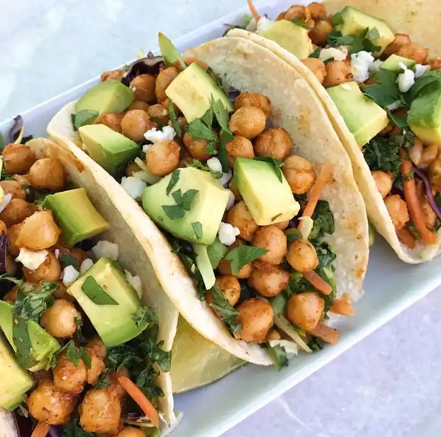

Easy Chickpea Tacos

Description
These Vegan Chickpea Tacos are the easy, delicious, weeknight meal you’ve been waiting for! They are seasoned with classic taco flavors - minus the mysterious ingredients hiding in pre-packaged blends. Cilantro Lime Slaw adds the perfect punch of bright, fresh flavor to create a vegetarian taco that your family will love.
Ingredients
- 2 tablespoon + 2 teaspoon olive oil, divided
- 2 (15oz.) cans chickpeas, drained
- 1.5 teaspoon chili powder
- 1.5 teaspoon cumin
- ½ teaspoon dried oregano
- ½ garlic powder
- Kosher salt
- Fresh cracked pepper
- 8 street taco flour tortillas
Directions
-
Dry chickpeas thoroughly on a clean kitchen towel. Be sure to remove as much water as possible so the oil doesn't splatter when you add them to the pan.
-
Heat 2 tablespoons oil in a large pan over medium heat.
-
Add chickpeas to the pan and cook, stirring frequently for 10 minutes.
-
Add chili powder, cumin, oregano, garlic powder, along with a couple pinches of salt and pepper and the remaining 2 teaspoons of olive oil.
-
Toss to coat the chickpeas evenly.
-
Then cook for another minute or two until the chickpeas are crispy.
-
Serve with flour tortillas, Cilantro Lime Slaw, vegan sour cream, and Cotija.
Homepage